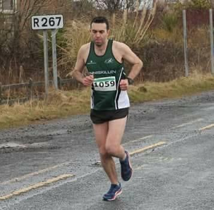
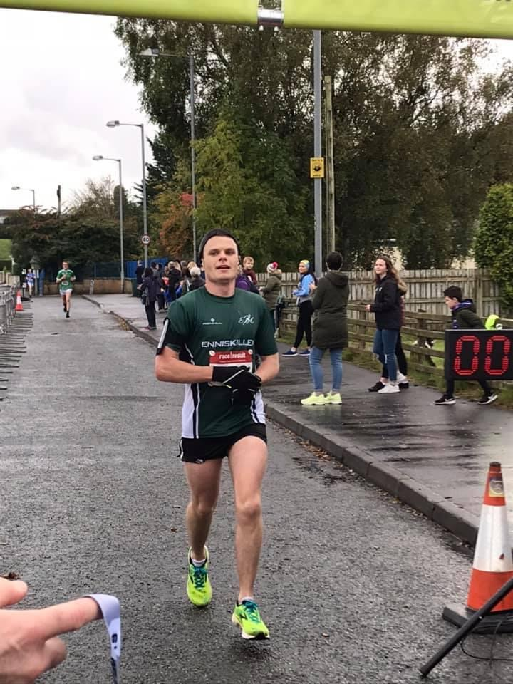
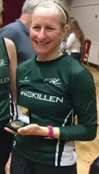

*Note* We understand a lot of our underage members may train with their respective schools' Cross Country team. We fully understand this and do not expect all sessions with the club and the school to be attended.
Gerard Colton
Gerard is our mens' captain for 2020. He's been in the club for 4 years now and has progressed massively during his time with us. A Tyrone native, Gerard usually partakes in races ranging from 5K to 10M (usually getting a podium finish) as well as participating in the 2018 London marathon.
Joan O'Kane

Joan O'Kane is our ladies' captain for 2020. She has been in the club for just over two years now. Like Gerard, she wasn't born in the Erne, but the Walled County. Joan favourite races are 5Ks and 10Ks with the odd time doing a longer distance including representing Northern Ireland at the 2019 Home Nations Masters Cross Country.
Anthony Duffy
Anthony is our mens' vice captain for 2020. Anthony has been part of ERC for twenty months or so and has gone from strength to strength since he first hit the track. A Boho man, he has achieved a lot in his short running career including multiple marathons and first place finishes in smaller distance races.
Heather Williams
Heather is our ladies' vice captain for 2020. A member since we formed, Heather has been a runner for many years winning multiple accolades and getting numerous call ups to represent her country at international level. She also sometimes helps with coaching as she has two kids, Patrick and Sophia, in the Junior members section.